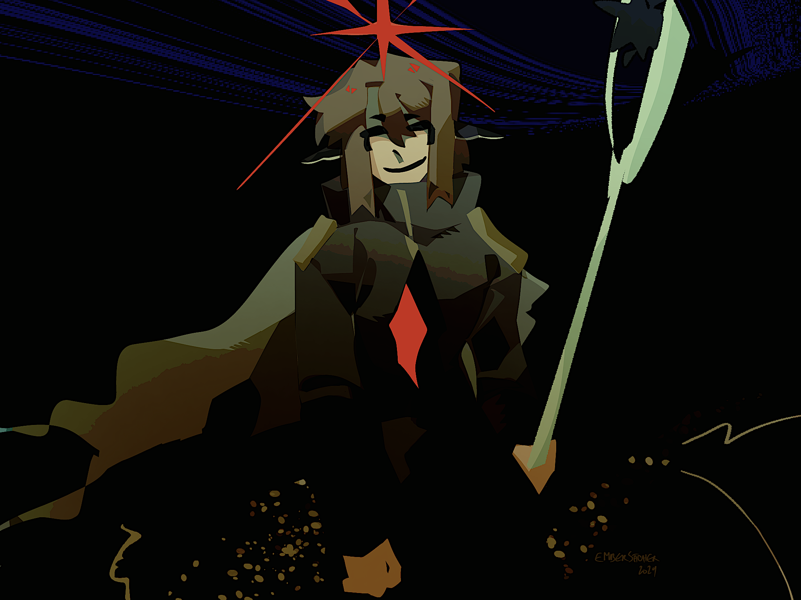
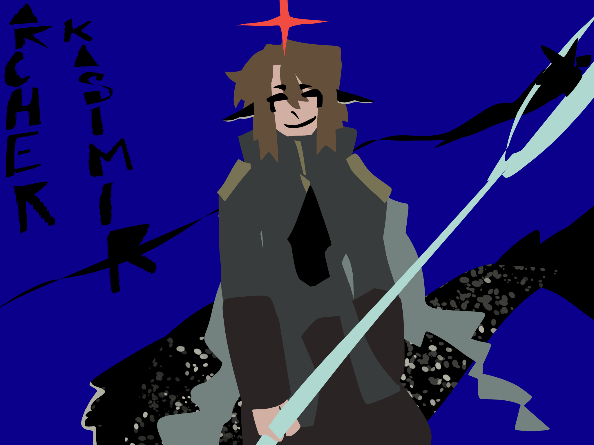
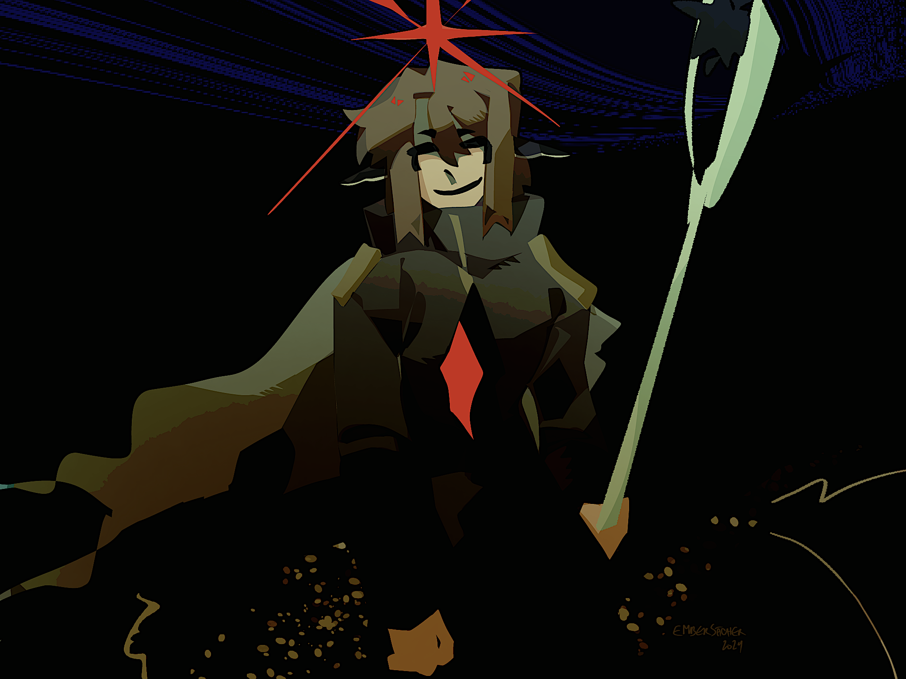

untitled
creation date: nov 4
characters featured: archer
i like the look of this one. it was a warmup sketch that i liked way too much and decided to finish. yayy
alt colors:

i like the look of this one. it was a warmup sketch that i liked way too much and decided to finish. yayy
alt colors:
